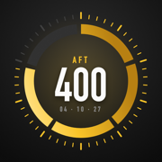

Add Training to your Home Screen
- Tap Share in Safari’s toolbar.
- Tap Add to Home Screen. Check that the preview shows this icon.
- Tap Add.
The home-screen icon opens your training log directly.
Open the app nowThis page isn’t set up yet: its EXEC_URL is missing.
Training is a personal workout log. It records sessions in its owner’s Google Sheet and imports sleep and recovery data from Apple Health. Privacy · Terms